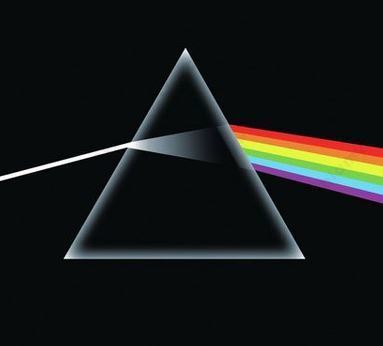
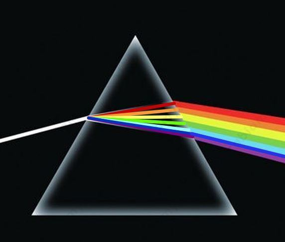

Tęcza powstaje w wyniku całkowitego wewnętrznego odbicia promieni słonecznych w kroplach wody zawieszonych w powietrzu. Światło białe na granicach ośrodków powietrza i wody ulega rozszczepieniu i obserwujemy kolorowy obraz łuku powstającego na niebie.
Halo powstaje w wyniku załamania promieni słonecznych w kryształkach lodu zawieszonych w powietrzu. Światło białe na granicach ośrodków lodu i wody ulega rozszczepieniu, natomiast efekt ten jest dużo słabszy niż dla tęczy. Obserwujemy biały okrąg wokół Słońca z lekką poświatą kolorów tęczy, które są jednak ułożone w odwrotnej kolejności niż w tęczy (kolor czerwony jest widoczny od wewnętrznej strony łuku).
Rozszczepienie światła przedstawione na okładce płyty:

Powyższe przedstawienie rozszczepienia światła w pryzmacie jest nieprawidłowe. Światło białe ulega rozszczepieniu na poszczególne barwy już we wnętrzu pryzmatu. Dodatkowo światło jest rozszczepiane na 7 wyróżnionych barw (nie 6): czerwony, pomarańczowy, żółty, zielony, niebieski, indygo, fioletowy.
Prawidłowe rozszczepienie światła w pryzmacie wyglądałoby następująco:

Tak na prawdę nie możemy zbliżać się do tęczy, więc jej rozmiary nie ulegają zmianie podczas naszego ruchu w jej kierunku. Tęcza nie jest fizycznym obiektem położonym w przestrzeni, a jedynie obrazem powstającym w wyniku rozszczepienia światła, które odbite w kroplach wody pada w naszą stronę.
Pozorne położenie łuku tęczy w przestrzeni zależy od wzajemnego położenia Słońca, kropel wody w powietrzu i obserwatora. Nasza odległość od obrazu tęczy obserwowanego w danych warunkach będzie zawsze taka sama (tęcza będzie zachowywała swoje rozmiary), ponieważ będzie w czasie rzeczywistym tworzyła się w ustalonej odległości od nas.
a)
Maksymalny kąt pod jakim możemy obserwować kolory tęczy wynosi 42° i odpowiada on załamaniu światła dla barwy czerwonej. Pozostałe kolory tęczy załamują się pod odpowiednio mniejszymi kątami aż do światła fioletowego, dla którego ten kąt wynosi 40°. Maksymalnemu kątowi widzenia danych promieni światła odpowiada ich maksymalne natężenie. Stąd obserwujemy widoczne odseparowanie kolorów tęczy, a nie ich mieszaninę w postaci światła białego. Poniżej kąta pod jakim widzimy światło fioletowe żaden z kolorów nie występuje w maksymalnym natężeniu, więc obserwujemy światło rozproszone wszystkich barw w postaci ich mieszaniny - światła białego. Dlatego niebo pod tęczą jest rozświetlone i wydaje się jaśniejsze niż nad tęczą.
b)
W filmie poruszono kwestię powiązania kąta załamania promieni światła o różnych barwach z ich maksymalnym natężeniem.
Wyróżniamy następujące barwy tęczy (w kolejności od zewnętrznej strony łuku):